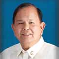

| History |
| Legislators |
| Laws |
| About |
 |
| LEGISLATORS |
| LEGISLATIVE BODY (YEAR) | INCLUSIVE YEARS | LEGISLATIVE DISTRICT/PROVINCE | LEGISLATOR | ||
1 |
1st Philippine Legislature | 1907 - 1909 |
1st District Negros Occidental | JAYME, Antonio |  |
2 |
1st Philippine Legislature | 1907 - 1909 |
2nd District Negros Occidental | MAPA, Dionisio |  |
3 |
1st Philippine Legislature | 1907 - 1909 |
3rd District Negros Occidental | MONTILLA, Agustin |  |
4 |
2nd Philippine Legislature | 1910 - 1912 |
1st District Negros Occidental | LOPEZ VILLANUEVA, Jose |  |
5 |
2nd Philippine Legislature | 1910 - 1912 |
2nd District Negros Occidental | FERNANDEZ YANSON, Manuel | |
6 |
2nd Philippine Legislature | 1910 - 1912 |
3rd District Negros Occidental | RAMOS, Rafael | |
7 |
3rd Philippine Legislature | 1912 - 1916 |
1st District Negros Occidental | SEVERINO, Melecio |  |
8 |
3rd Philippine Legislature | 1912 - 1916 |
2nd District Negros Occidental | ALUNAN, Rafael R. |  |
9 |
3rd Philippine Legislature | 1912 - 1916 |
3rd District Negros Occidental | MONTILLA, Gil M. |  |
10 |
4th Philippine Legislature | 1916 - 1919 |
1st District Negros Occidental | SEVERINO, Lope P. |  |
11 |
4th Philippine Legislature | 1916 - 1919 |
2nd District Negros Occidental | ALUNAN, Rafael R. | |
12 |
4th Philippine Legislature | 1916 - 1919 |
3rd District Negros Occidental | MONTILLA, Gil M. | |
13 |
5th Philippine Legislature | 1919 - 1922 |
1st District Negros Occidental | SEVERINO, Lope P. | |
14 |
5th Philippine Legislature | 1919 - 1922 |
2nd District Negros Occidental | ALUNAN, Rafael R. | |
15 |
5th Philippine Legislature | 1919 - 1922 |
3rd District Negros Occidental | SILVERIO, Tito |  |
16 |
6th Philippine Legislature | 1922 - 1925 |
1st District Negros Occidental | HILADO, Serafin P. | |
17 |
6th Philippine Legislature | 1922 - 1925 |
2nd District Negros Occidental | JIMENEZ YANSON, Vicente | |
18 |
6th Philippine Legislature | 1922 - 1925 |
3rd District Negros Occidental | LIMSIACO, Eliseo P. | |
19 |
7th Philippine Legislature | 1925 - 1927 |
1st District Negros Occidental | HILADO, Serafin P. | |
20 |
7th Philippine Legislature | 1925 - 1927 |
2nd District Negros Occidental | TORRES, Ramon |  |
21 |
7th Philippine Legislature | 1925 - 1927 |
3rd District Negros Occidental | LACSON, Isaac |  |
22 |
8th Philippine Legislature | 1928 - 1930 |
1st District Negros Occidental | LOCSIN, Jose C. |  |
23 |
8th Philippine Legislature | 1928 - 1930 |
2nd District Negros Occidental | JIMENEZ YANSON, Vicente | |
24 |
8th Philippine Legislature | 1928 - 1930 |
3rd District Negros Occidental | MONTILLA, Emilio | |
25 |
9th Philippine Legislature | 1931 - 1934 |
1st District Negros Occidental | MAGALONA, Enrique B. |  |
26 |
9th Philippine Legislature | 1931 - 1934 |
2nd District Negros Occidental | TORRES, Ramon | |
27 |
9th Philippine Legislature | 1931 - 1934 |
3rd District Negros Occidental | YULO, Emilio | |
28 |
10th Philippine Legislature | 1934 - 1935 |
1st District Negros Occidental | MAGALONA, Enrique B. | |
29 |
10th Philippine Legislature | 1934 - 1935 |
2nd District Negros Occidental | TORRES, Ramon | |
30 |
10th Philippine Legislature | 1934 - 1935 |
3rd District Negros Occidental | RAMOS, Agustin S. |  |
31 |
1st National Assembly (Commonwealth) | 1935 - 1938 |
1st District Negros Occidental | MAGALONA, Enrique B. | |
32 |
1st National Assembly (Commonwealth) | 1935 - 1938 |
2nd District Negros Occidental | HERNAEZ, Pedro C. |  |
33 |
1st National Assembly (Commonwealth) | 1935 - 1938 |
3rd District Negros Occidental | MONTILLA, Gil M. | |
34 |
2nd National Assembly (Commonwealth) | 1939 - 1941 |
1st District Negros Occidental | MAGALONA, Enrique B. | |
35 |
2nd National Assembly (Commonwealth) | 1939 - 1941 |
2nd District Negros Occidental | HERNAEZ, Pedro C. | |
36 |
2nd National Assembly (Commonwealth) | 1939 - 1941 |
3rd District Negros Occidental | YULO, Jose |  |
37 |
National Assembly (Japanese Regime) | 1943 - 1944 |
Negros Occidental | CASTILLO, Vicente F. | |
38 |
National Assembly (Japanese Regime) | 1943 - 1944 |
Negros Occidental | MONTILLA, Gil M. | |
39 |
1st Congress of the Commonwealth (Liberation Period) | 1945 - 1945 |
1st District Negros Occidental | MAGALONA, Enrique B. | |
40 |
1st Congress of the Commonwealth (Liberation Period) | 1945 - 1945 |
2nd District Negros Occidental | GONZAGA, Aguedo | |
41 |
1st Congress of the Commonwealth (Liberation Period) | 1945 - 1945 |
3rd District Negros Occidental | VARGAS, Raymundo | |
42 |
2nd Congress of the Commonwealth | 1946 - 1946 |
1st District Negros Occidental | GUSTILO, Vicente Sr. F. |  |
43 |
2nd Congress of the Commonwealth | 1946 - 1946 |
2nd District Negros Occidental | HILADO, Carlos |  |
44 |
2nd Congress of the Commonwealth | 1946 - 1946 |
3rd District Negros Occidental | LIMSIACO, Eliseo P. | |
45 |
1st Congress of the Republic | 1946 - 1949 |
1st District Negros Occidental | GUSTILO, Vicente Sr. F. | |
46 |
1st Congress of the Republic | 1946 - 1949 |
2nd District Negros Occidental | HILADO, Carlos | |
47 |
1st Congress of the Republic | 1946 - 1949 |
3rd District Negros Occidental | LIMSIACO, Eliseo P. | |
48 |
2nd Congress of the Republic | 1950 - 1953 |
2nd District Negros Occidental | HILADO, Carlos | |
49 |
2nd Congress of the Republic | 1950 - 1953 |
1st District Negros Occidental | FERRER, Francisco |  |
50 |
2nd Congress of the Republic | 1950 - 1953 |
3rd District Negros Occidental | ABETO, Augurio M. |  |
51 |
3rd Congress of the Republic | 1954 - 1957 |
1st District Negros Occidental | PUEY, Jose B. |  |
52 |
3rd Congress of the Republic | 1954 - 1957 |
2nd District Negros Occidental | HILADO, Carlos | |
53 |
3rd Congress of the Republic | 1954 - 1957 |
3rd District Negros Occidental | GATUSLAO, Agustin M. | |
54 |
4th Congress of the Republic | 1958 - 1961 |
1st District Negros Occidental | GUSTILO, Vicente Sr. F. | |
55 |
4th Congress of the Republic | 1958 - 1961 |
2nd District Negros Occidental | FERRER, Inocencio V. |  |
56 |
4th Congress of the Republic | 1958 - 1961 |
3rd District Negros Occidental | GATUSLAO, Agustin M. | |
57 |
5th Congress of the Republic | 1962 - 1962 |
1st District Negros Occidental | GUSTILO, Vicente Sr. F. | |
58 |
5th Congress of the Republic | 1962 - 1965 |
2nd District Negros Occidental | FERRER, Inocencio V. | |
59 |
5th Congress of the Republic | 1962 - 1965 |
3rd District Negros Occidental | GATUSLAO, Agustin M. | |
60 |
5th Congress of the Republic | 1964 - 1965 |
1st District Negros Occidental | GUSTILO, Armando C. | |
61 |
6th Congress of the Republic | 1966 - 1969 |
1st District Negros Occidental | GUSTILO, Armando C. | |
62 |
6th Congress of the Republic | 1966 - 1969 |
2nd District Negros Occidental | AMANTE, Felix P. |  |
63 |
6th Congress of the Republic | 1966 - 1969 |
3rd District Negros Occidental | FERIA, Felix Jr. M. |  |
64 |
7th Congress of the Republic | 1970 - 1972 |
1st District Negros Occidental | GUSTILO, Armando C. | |
65 |
7th Congress of the Republic | 1970 - 1972 |
2nd District Negros Occidental | MONTELIBANO, Roberto L. |  |
66 |
7th Congress of the Republic | 1970 - 1972 |
3rd District Negros Occidental | GATUSLAO, Agustin M. | |
67 |
Regular Batasang Pambansa | 1984 - 1986 |
Negros Occidental, Region VI | MONTELIBANO, Roberto L. | |
68 |
Regular Batasang Pambansa | 1984 - 1986 |
Negros Occidental, Region VI | MARAÑON, Alfredo Jr. G. |  |
69 |
Regular Batasang Pambansa | 1984 - 1986 |
Negros Occidental, Region VI | VARELA, Jose Jr. Y. |  |
70 |
Regular Batasang Pambansa | 1984 - 1986 |
Negros Occidental, Region VI | GOLEZ, Jaime G. | |
71 |
Regular Batasang Pambansa | 1984 - 1986 |
Negros Occidental, Region VI | GATUSLAO, Roberto A. |  |
72 |
Regular Batasang Pambansa | 1984 - 1986 |
Negros Occidental, Region VI | GAMBOA, Wilson |  |
73 |
Regular Batasang Pambansa | 1984 - 1986 |
Negros Occidental, Region VI | GATUSLAO, Antonio M. |  |
74 |
8th Congress of the Republic | 1987 - 1992 |
1st District Negros Occidental | LAGUDA, Salvador S. |  |
75 |
8th Congress of the Republic | 1987 - 1992 |
2nd District Negros Occidental | PUEY, Manuel H. |  |
76 |
8th Congress of the Republic | 1987 - 1992 |
3rd District Negros Occidental | LACSON, Jose Carlos V. |  |
77 |
8th Congress of the Republic | 1987 - 1992 |
4th District Negros Occidental | MATTI, Edward M. |  |
78 |
8th Congress of the Republic | 1987 - 1992 |
5th District Negros Occidental | YULO, Mariano M. |  |
79 |
8th Congress of the Republic | 1987 - 1992 |
6th District Negros Occidental | STARKE, Hortensia L. |  |
80 |
9th Congress of the Republic | 1992 - 1995 |
1st District Negros Occidental | CARMONA, Tranquilino B. |  |
81 |
9th Congress of the Republic | 1992 - 1995 |
2nd District Negros Occidental | PUEY, Manuel H. | |
82 |
9th Congress of the Republic | 1992 - 1995 |
3rd District Negros Occidental | LACSON, Jose Carlos V. | |
83 |
9th Congress of the Republic | 1992 - 1995 |
4th District Negros Occidental | MATTI, Edward M. | |
84 |
9th Congress of the Republic | 1992 - 1995 |
5th District Negros Occidental | YULO, Mariano M. | |
85 |
9th Congress of the Republic | 1992 - 1995 |
6th District Negros Occidental | STARKE, Hortensia L. | |
86 |
10th Congress of the Republic | 1995 - 1998 |
1st District Negros Occidental | LEDESMA, Julio IV A. |  |
87 |
10th Congress of the Republic | 1995 - 1998 |
2nd District Negros Occidental | MARAÑON, Alfredo Jr. G. | |
88 |
10th Congress of the Republic | 1995 - 1998 |
3rd District Negros Occidental | LACSON, Jose Carlos V. | |
89 |
10th Congress of the Republic | 1995 - 1998 |
4th District Negros Occidental | MATTI, Edward M. | |
90 |
10th Congress of the Republic | 1995 - 1998 |
5th District Negros Occidental | YULO, Mariano M. | |
91 |
10th Congress of the Republic | 1995 - 1998 |
6th District Negros Occidental | ALVAREZ, Genaro Jr. M. |  |
92 |
11th Congress of the Republic | 1998 - 2001 |
1st District Negros Occidental | LEDESMA, Julio IV A. | |
93 |
11th Congress of the Republic | 1998 - 2001 |
2nd District Negros Occidental | MARAÑON, Alfredo Jr. G. | |
94 |
11th Congress of the Republic | 1998 - 2001 |
3rd District Negros Occidental | VILLANUEVA, Edith Y. |  |
95 |
11th Congress of the Republic | 1998 - 2001 |
4th District Negros Occidental | COJUANGCO, Carlos O. |  |
96 |
11th Congress of the Republic | 1998 - 2001 |
5th District Negros Occidental | LOZADA, Jose Apolinario Jr. L. |  |
97 |
11th Congress of the Republic | 1998 - 2001 |
6th District Negros Occidental | ALVAREZ, Genaro Jr. M. | |
98 |
12th Congress of the Republic | 2001 - 2004 |
1st District Negros Occidental | LEDESMA, Julio IV A. | |
99 |
12th Congress of the Republic | 2001 - 2004 |
2nd District Negros Occidental | MARAÑON, Alfredo Jr. G. | |
100 |
12th Congress of the Republic | 2001 - 2004 |
3rd District Negros Occidental | LACSON, Jose Carlos V. | |
101 |
12th Congress of the Republic | 2001 - 2004 |
4th District Negros Occidental | COJUANGCO, Carlos O. | |
102 |
12th Congress of the Republic | 2001 - 2004 |
5th District Negros Occidental | LOZADA, Jose Apolinario Jr. L. | |
103 |
12th Congress of the Republic | 2001 - 2004 |
6th District Negros Occidental | ALVAREZ, Genaro Jr. M. | |
104 |
13th Congress of the Republic | 2004 - 2007 |
1st District Negros Occidental | CARMONA, Tranquilino B. | |
105 |
13th Congress of the Republic | 2004 - 2007 |
2nd District Negros Occidental | MARAÑON, Alfredo III D. |  |
106 |
13th Congress of the Republic | 2004 - 2007 |
3rd District Negros Occidental | LACSON, Jose Carlos V. | |
107 |
13th Congress of the Republic | 2004 - 2007 |
4th District Negros Occidental | COJUANGCO, Carlos O. | |
108 |
13th Congress of the Republic | 2004 - 2007 |
5th District Negros Occidental | ARROYO, Ignacio T. |  |
109 |
13th Congress of the Republic | 2004 - 2007 |
6th District Negros Occidental | ALVAREZ, Genaro Rafael III K. |  |
110 |
14th Congress of the Republic | 2007 - 2010 |
1st District Negros Occidental | LEDESMA, Julio IV A. | |
111 |
14th Congress of the Republic | 2007 - 2010 |
2nd District Negros Occidental | MARAÑON, Alfredo III D. | |
112 |
14th Congress of the Republic | 2007 - 2010 |
3rd District Negros Occidental | LACSON, Jose Carlos V. | |
113 |
14th Congress of the Republic | 2007 - 2010 |
4th District Negros Occidental | FERRER, Jeffrey P. |  |
114 |
14th Congress of the Republic | 2007 - 2010 |
5th District Negros Occidental | ARROYO, Ignacio T. | |
115 |
14th Congress of the Republic | 2007 - 2010 |
6th District Negros Occidental | ALVAREZ, Genaro Jr. M. | |
116 |
15th Congress of the Republic | 2010 - 2013 |
1st District Negros Occidental | LEDESMA, Julio IV A. |
 |
117 |
15th Congress of the Republic | 2010 - 2013 |
2nd District Negros Occidental | MARAÑON, Alfredo III D. |
 |
118 |
15th Congress of the Republic | 2010 - 2013 |
3rd District Negros Occidental | BENITEZ, Alfredo 'Albee' B. |
 |
119 |
15th Congress of the Republic | 2010 - 2013 |
4th District Negros Occidental | FERRER, Jeffrey P. |
 |
120 |
15th Congress of the Republic | 2010 - 2012 |
5th District Negros Occidental | ARROYO, Iggy T. (+) |
.jpg) |
121 |
15th Congress of the Republic | 2012 - 2013 |
5th District Negros Occidental | MIRASOL, Alejandro Y. |
 |
122 |
15th Congress of the Republic | 2010 - 2013 |
6th District Negros Occidental | ALVAREZ, Mercedes K. |
 |
| 123 | 16TH Congress of the Republic | 2013 - 2016 | 1ST District, Negros Occidental Province | LEDESMA, Julio IV A. | |
| 124 | 16TH Congress of the Republic | 2013 - 2016 | 2ND District, Negros Occidental Province | CUEVA, Leo Rafael M. | |
| 125 | 16TH Congress of the Republic | 2013 - 2016 | 3RD District, Negros Occidental Province | BENITEZ, Alfredo "Albee" B. | |
| 126 | 16TH Congress of the Republic | 2013 - 2016 | 4TH District, Negros Occidental Province | FERRER, Jeffrey P. | |
| 127 | 16TH Congress of the Republic | 2013 - 2016 | 5TH District, Negros Occidental Province | MIRASOL, Alejandro Y. |  |
| 128 | 16TH Congress of the Republic | 2013 - 2016 | 6TH District, Negros Occidental Province | ALVAREZ, Mercedes K. |

Congressional Library Bureau
Legislative Library Service